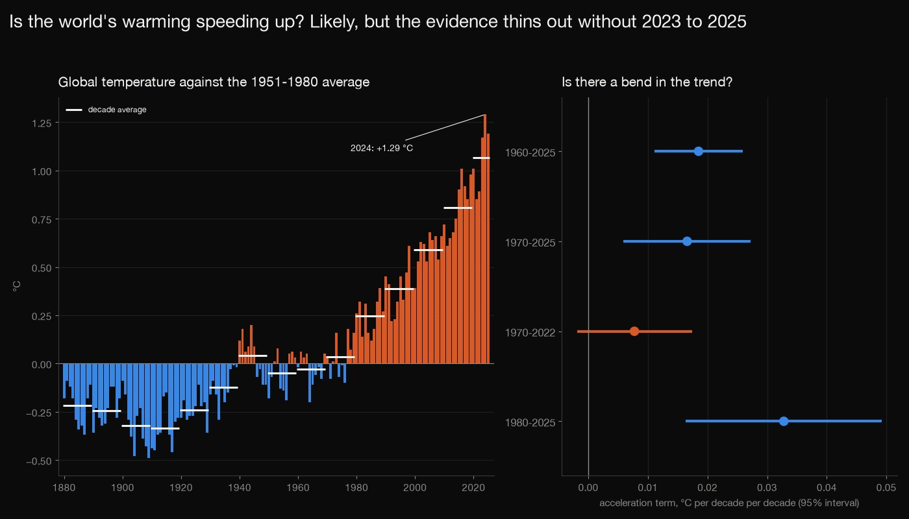
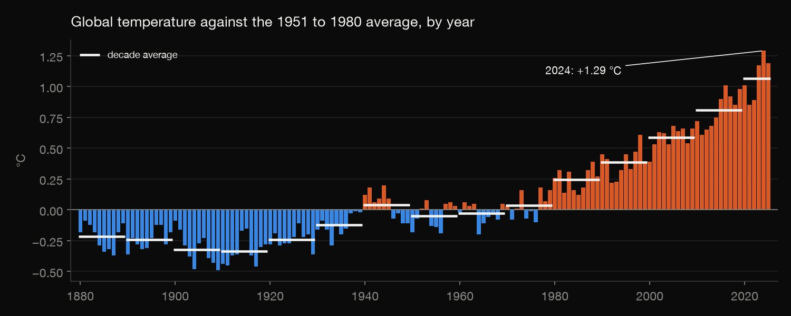
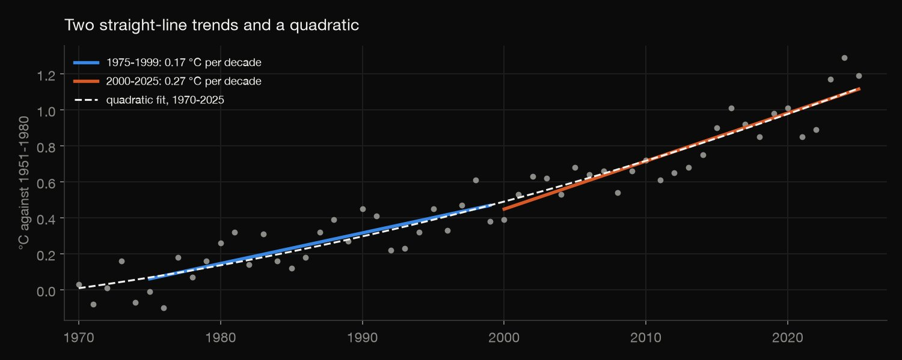
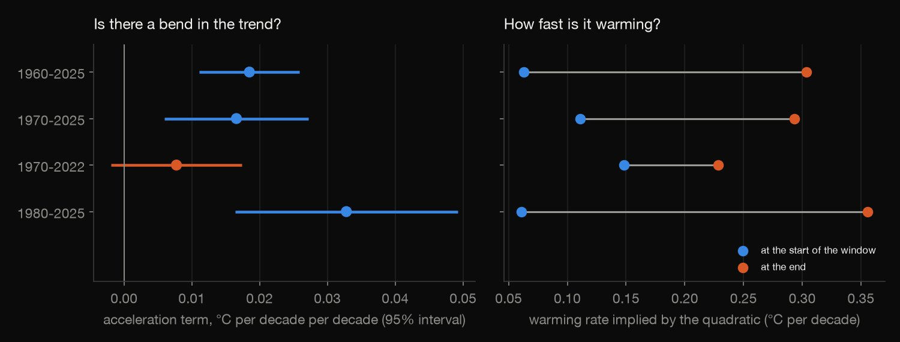
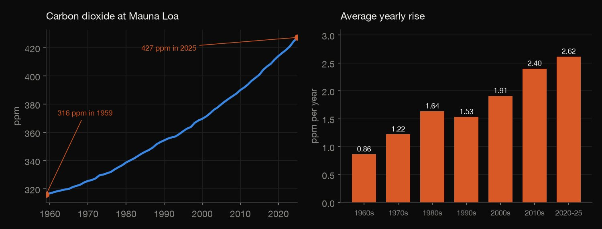
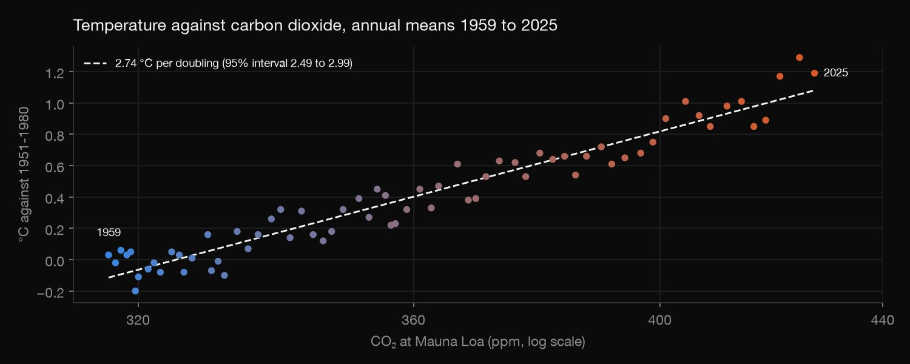

Python · Time-series analysis · 2026-10
Is the World's Warming Speeding Up?
NASA's global temperature record: the last ten years averaged 1.3 °C above 1880–1920, the eleven warmest years are 2015 to 2025, and the warming rate rose from 0.04 °C per decade before 1970 to 0.27 since 2000; whether it is still rising depends on the three record years 2023 to 2025.

One temperature dataset (NASA GISTEMP v4), annual global means to 2025. The intervals allow for one year resembling the last (Newey-West), which is an approximation, and windows of 15 to 26 years are wide and move with the window. Whether the warming rate is rising depends on three years: the curvature's interval is above zero in the windows that end in 2025 and includes zero for 1970 to 2022. The 2023-24 El Niño is not removed. Degrees per doubling of CO2 is an association between two trending series, not climate sensitivity.
01 — The problem
NASA has kept a global temperature record since 1880, and NOAA has measured carbon dioxide at Mauna Loa since 1959. How much has the world warmed, is the warming speeding up, and how closely does temperature follow carbon dioxide?
The questions follow GeeksforGeeks' "Climate Change Data Analysis". The data is real and current to 2025 (GISTEMP v4 and NOAA's annual Mauna Loa mean), not a course file. The honest answer to "speeding up?" depends on how much weight three recent record years carry, and the page shows how.
02 — What I built
Two small public series, audited and analysed:
- Audit: complete years, annual values against their months, and the 1951–1980 baseline.
- How much and how fast: decade averages, the warmest years and trends in six windows, with errors that allow for one year resembling the last.
- Speeding up? A quadratic over four windows, and the rate it implies.
- Carbon dioxide: its yearly rise by decade, and temperature against its logarithm.
- Check:
check.pyrecomputes 449 numbers with a hand-written least squares and covariance.
03 — How it was built
- 01
Download the two series
NASA GISS's GISTEMP v4 global land-ocean index (monthly and annual deviations from the 1951–1980 average) and NOAA's annual mean carbon dioxide at Mauna Loa. Both are tiny and their providers update them, so the exact copies used are committed with their checksums.
- 02
Audit before analysing
146 complete years, 1880 to 2025; 2026 has 8 months and is left out. Each annual value matches the mean of its twelve months to within 0.006 °C, and the 1951–1980 anomalies average 0.0003, as the baseline says they should.
- 03
How much, and how fast
Decade averages, the warmest years, and a straight-line trend in each of six windows. Yearly temperatures are not independent, so the standard errors use a Newey–West covariance (5 lags, fixed in advance, with 3 and 8 shown as well).
r = sm.OLS(y, X).fit(cov_type="HAC", cov_kwds={"maxlags": lags, "use_correction": True}) - 04
Is it speeding up?
A quadratic in time over four windows. Its curvature says whether the rate is changing, and the rate it implies at the start and end of each window says by how much. One window stops in 2022, before the three record years, to see what they contribute.
y = a.loc[lo:hi]; mid = (lo + hi) / 2; x = (y.index.to_numpy() - mid) / 10.0; X = np.column_stack([np.ones(len(x)), x, x ** 2]); p, V, t, _ = ols_hac(y.to_numpy(), X); n = len(y) - 05
Carbon dioxide and temperature
The average yearly rise in carbon dioxide by decade, and temperature regressed on log base 2 of the concentration, which gives degrees per doubling. It is an association between two trending series, so it is shown for three windows.
y = a.loc[lo:2025]; x = np.log2(c2.loc[lo:2025].to_numpy()); X = sm.add_constant(x); p, V, t, o = ols_hac(y.to_numpy(), X); se = np.sqrt(V[1, 1]); n = len(y) - 06
Recompute it by hand
check.pyrecomputes 449 numbers in plain Python with no pandas, numpy or statsmodels: the audit from the raw text, the decade means and rankings, every regression with a hand-written least squares and a hand-written Newey–West covariance, the intervals and p-values, the acceleration terms and rates, and the carbon dioxide figures. It matches statsmodels to the last digit saved, and changing the covariance's weights or its small-sample correction makes it fail.w = 1 - lag / (L + 1) for t in range(lag, n):
04 — Results

How much. The last ten years (2016 to 2025) averaged 1.02 °C above the 1951–1980 average and 1.30 °C above the 1880–1920 average (−0.28 °C), a common stand-in for pre-industrial that is not an official baseline. The eleven warmest years in the record are the eleven years 2015 to 2025: 2024 is the warmest at +1.29 °C, then 2025 (+1.19) and 2023 (+1.17). Decade averages run from −0.22 °C in the 1880s and −0.34 in the 1910s, the coldest, through 0.04 in the 1970s and 0.25, 0.39, 0.59 and 0.81 in the 1980s to 2010s, to 1.07 for 2020 to 2025.

| Window | °C per decade | 95% CI |
|---|---|---|
| 1880–1969 | 0.037 | 0.022–0.052 |
| 1970–2025 | 0.202 | 0.179–0.225 |
| 1975–1999 | 0.170 | 0.119–0.221 |
| 2000–2025 | 0.267 | 0.207–0.327 |
| 2011–2025 | 0.386 | 0.291–0.482 |
| 1880–2025 | 0.083 | 0.064–0.103 |
How fast. The slope of a straight line through each window, with intervals from a Newey–West covariance that allows for one year resembling the last. The 2000–2025 rate is 0.097 °C per decade above the 1975–1999 rate (interval 0.020 to 0.173, p = 0.014). The ordinary standard error is too small: for 1970 to 2025 the Newey–West one is 0.0115 against 0.0088, 31% larger. With 3 or 8 lags instead of 5 the intervals barely move (2000–2025: 0.203 to 0.331, 0.207 to 0.327 and 0.213 to 0.321).

| Window | Curvature | 95% CI |
|---|---|---|
| 1960–2025 | 0.018 | 0.011–0.026 |
| 1970–2025 | 0.017 | 0.006–0.027 |
| 1980–2025 | 0.033 | 0.016–0.049 |
| 1970–2022 | 0.008 | −0.002–0.017 |
Speeding up, but it depends on three years. A quadratic fitted to 1970 to 2025 has a curvature of 0.0166 °C per decade per decade (interval 0.0059 to 0.0272, p = 0.003): the warming rate rises from 0.11 °C per decade in 1970 (0.05 to 0.17) to 0.29 in 2025 (0.23 to 0.36). Starting in 1960 or in 1980 gives the same sign. Stopping in 2022, before the three record years, the curvature is 0.0077, positive but with an interval that includes zero (−0.0019 to 0.0174, p = 0.11), and the rate at the end is 0.23 (0.17 to 0.29) instead of 0.29. The table gives each window's curvature; the chart shows the rate it implies at each end.

Carbon dioxide is rising faster too. It went from 316.0 ppm in 1959 to 427.4 ppm in 2025, 35.2% more. The yearly rise averaged 0.86 ppm in the 1960s, then 1.22, 1.64, 1.53, 1.91 and 2.40 in the following decades, and 2.62 from 2020 to 2025, three times the 1960s rate.

How closely they line up. Temperature rises 2.74 °C per doubling of carbon dioxide over 1959 to 2025 (interval 2.49 to 2.99, R² 0.93), 2.84 over 1979 to 2025 (2.50 to 3.19) and 3.24 over 2000 to 2025 (2.58 to 3.91). It is an association between two series that both trend, not climate sensitivity, and it moves with the window.
05 — What I'd do next
- Remove the El Niño effect (its index is public) and see whether the curvature survives without it.
- Repeat with other groups' global temperature series, to see whether the dependence on three years is specific to GISTEMP.
- Replace the crude degrees-per-doubling regression with an energy-budget estimate that accounts for aerosols and other greenhouse gases.